Planner ALNS, les choix
Chaque étape, pourquoi on l'a faite comme ça, et ce qu'elle rapporte. Partie 1 : le planner (étapes 00 à 09, scénario L3-301). Partie 2 : la policy embarquée quand la liaison sol est coupée (étapes 10 à 17). Toutes les captures viennent du viewer du kit.
Le planner
00Le problème
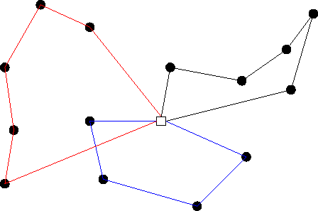
Pour nous : le dépôt est la base, les véhicules sont les scouts, les clients sont les contacts. Chaque contact a une fenêtre de temps et rapporte des points, et on n'est pas obligé de tous les servir. C'est un TOPTW (tournées d'orientation avec fenêtres). Il s'y ajoute l'affectation des effecteurs aux hostiles. C'est NP-difficile : on cherche une très bonne solution en 45 s, pas l'optimum prouvé.
01Baseline d'abord, ALNS ensuite
planner.py calcule le plan glouton fourni, puis lance l'ALNS avec le temps restant, et écrit le meilleur plan valide.
02Prétraitement : écarter l'impossible
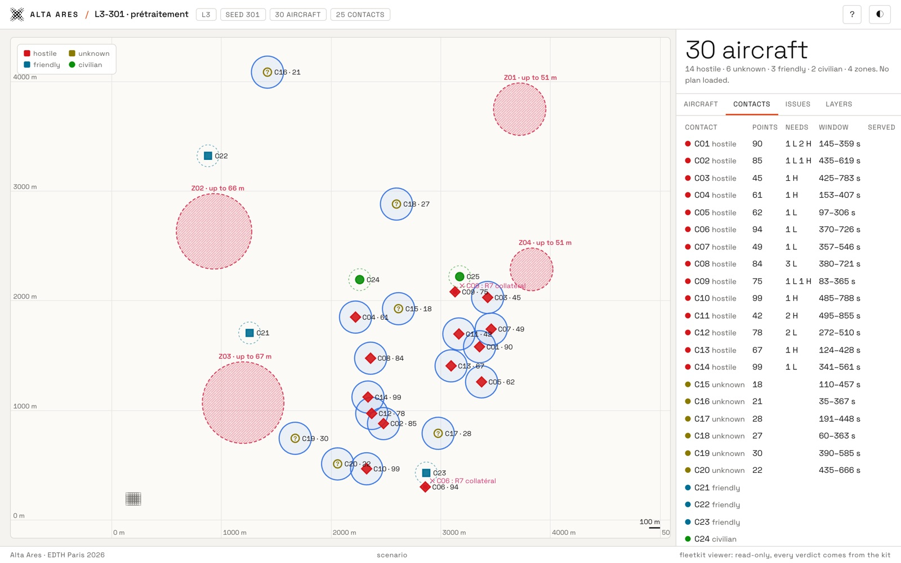
On retire les contacts qui ne peuvent rien rapporter : collatéral R7, besoins plus grands que la flotte, fenêtre plus courte que le dwell de 20 s, aucun point d'observation libre sur l'anneau, aucun effecteur à portée.
03Découper : scouts d'un côté, effecteurs de l'autre
L'ALNS ne cherche que les tournées des scouts. Les effecteurs sont affectés ensuite aux hostiles observés.
04Solution initiale : insertion regret-2
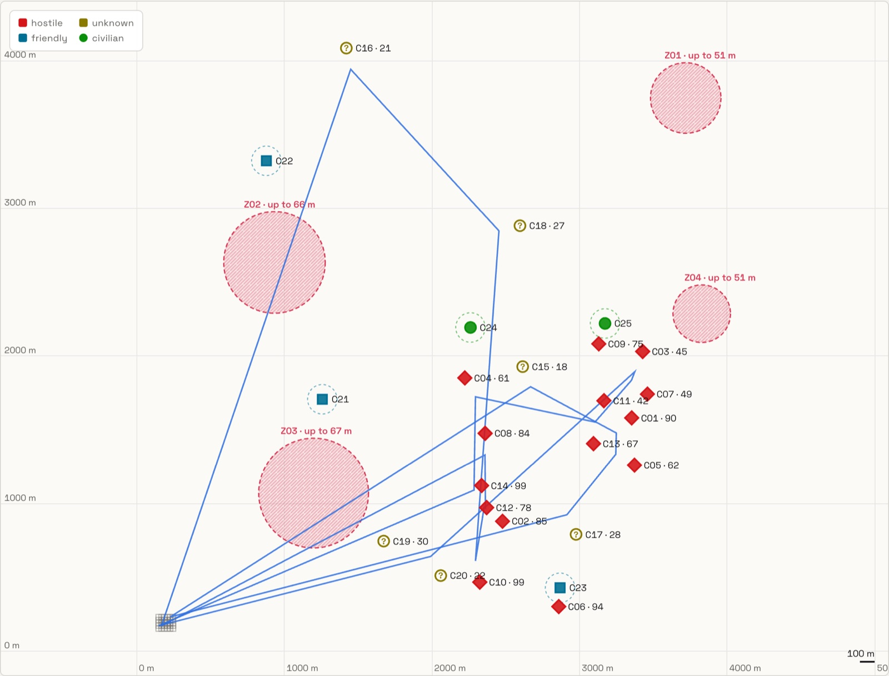
On insère d'abord le contact qui a le plus à perdre s'il attend : score = g1 + (g1 − g2), avec g1 et g2 le meilleur et le 2ᵉ meilleur gain d'insertion.
05La boucle ALNS : casser, reconstruire
5 destroy (aléatoire, pires, liés, route entière, secteur) × 3 repair (regret, regret bruité, glouton bruité). Leurs poids s'adaptent tous les 30 tours.
06Acceptation par recuit simulé
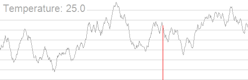
Une solution moins bonne est acceptée avec une probabilité exp(Δ/T). La température T baisse jusqu'à 0 à la deadline.
07Algorithme hongrois pour les affectations
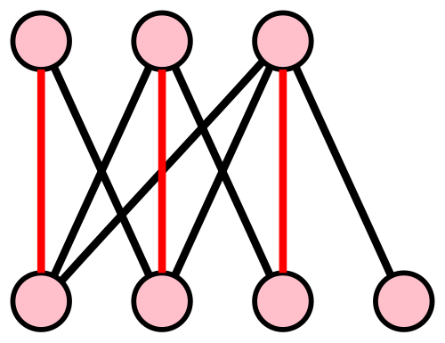
Utilisé deux fois : réaffecter les tournées aux scouts (chacun a sa base et sa batterie) et affecter les effecteurs aux hostiles à énergie minimale.
08Réalisation 3D et validateur officiel
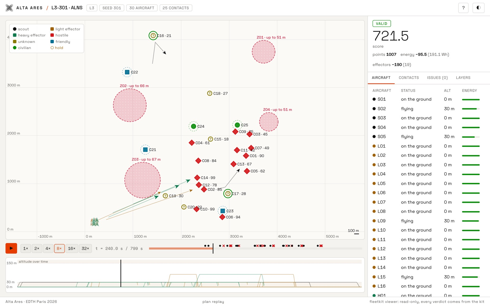
Les 5 meilleures solutions (élites) deviennent des waypoints datés en 3D : altitudes, séparation 40 m, synchronisation des groupes. On répare au validateur officiel et on garde le meilleur vrai score.
09Le résultat sur L3-301
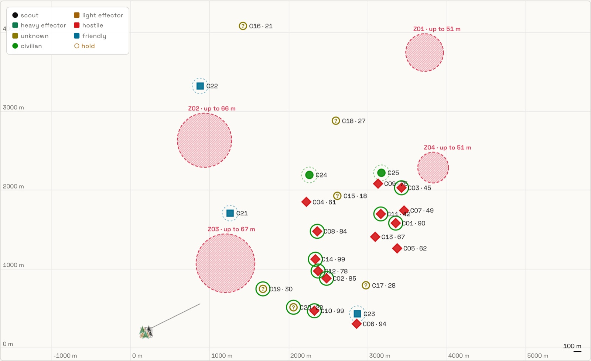
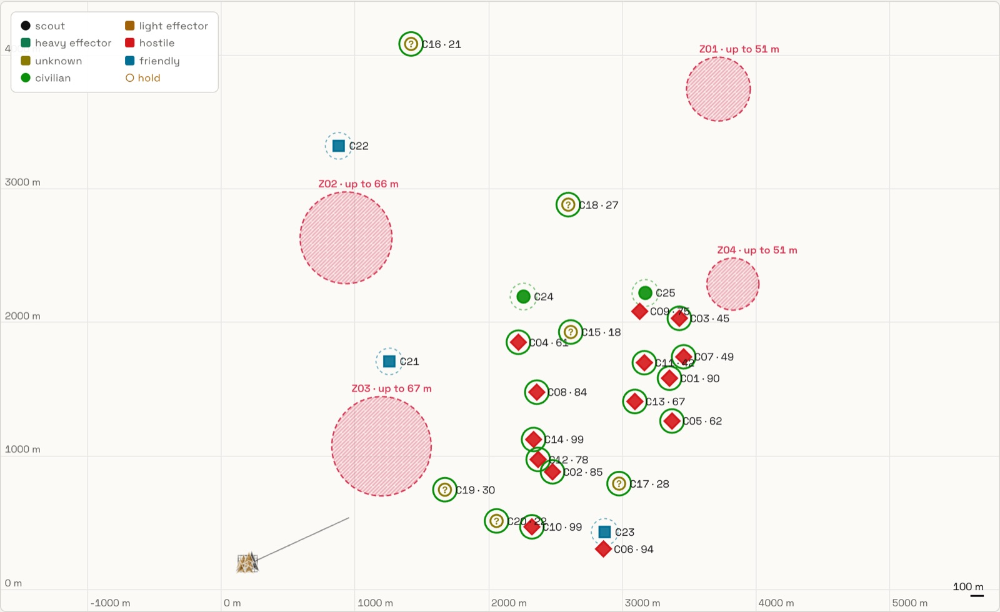
Cercle vert = contact servi. Même scénario, même flotte : +70 %, avec moins d'énergie.
| Scénario | Glouton | ALNS | Gain |
|---|---|---|---|
| L1-101 | 68,0 | 70,8 | +4 % |
| L2-201 | 277,8 | 294,9 | +6 % |
| L2-202 | 232,9 | 266,7 | +15 % |
| L3-301 | 423,8 | 721,5 | +70 % |
| L3-302 | 326,5 | 416,1 | +27 % |
| L3-303 | 275,9 | 444,9 | +61 % |
| L4-401 | 641,2 | 1 673,4 | ×2,6 |
| L4-402 | 418,5 | 1 186,5 | ×2,8 |
| Total | 2 664,5 | 5 074,7 | ×1,90 |
Run du 21/11/2026, 8 plans valides, 43 s au maximum par scénario. Plus le scénario est gros, plus l'écart se creuse : c'est là que la recherche paie.
Link loss : quand le sol se tait
10Le défi
À t_loss, la liaison sol est coupée pour toute la flotte. Chaque appareil appelle alors Policy.step(obs) une fois par seconde et choisit une action. Il ne peut pas inventer de route.
Trois événements non annoncés : un hostile reclassé ami, une zone interdite qui apparaît, un appareil en panne. On ne les détecte qu'à moins de 300 m.
11Dead reckoning : le plan sert de carte des autres
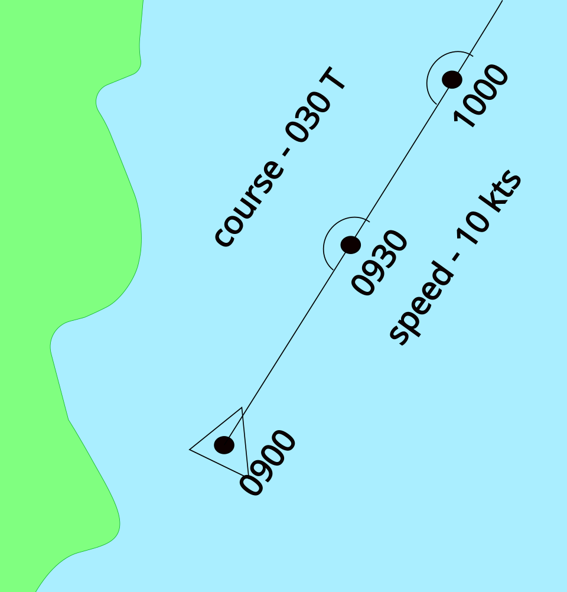
Chaque appareil embarque le plan complet. Un pair qui ne dit rien est supposé le suivre exactement : sa position se calcule sur son horloge de route (RouteClock). Seul celui qui dévie du plan parle.
broadcast) coûte 60 messages par minute et sature la radio.12Deux messages, envoyés sur événement
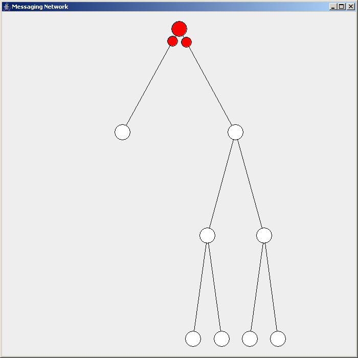
Chaque nouvelle info part 2 fois (5 % de perte, donc 0,25 % de chance de tout perdre). Elle est répétée seulement quand un effecteur concerné est proche et va bientôt frapper. Taille toujours ≤ 64 octets.
13Porte R4 : pas de preuve, pas de frappe
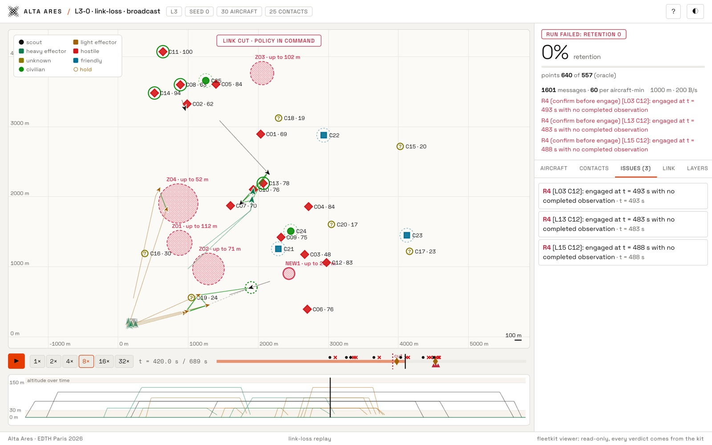
broadcast sur L3-0 : le scout de C12 fait demi-tour à cause de la nouvelle zone, mais trois effecteurs frappent quand même C12. R4 est violée, le run vaut 0 %.Un effecteur ne frappe que s'il sait qu'une observation de sa cible s'est terminée au moins 10 s avant (+0,5 s de marge). Sinon il s'arrête un pas avant la cible et attend la confirmation par message.
14Danger détecté : abandonner proprement
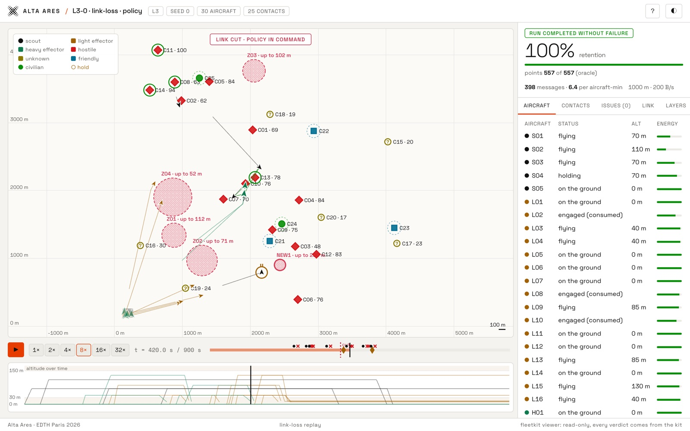
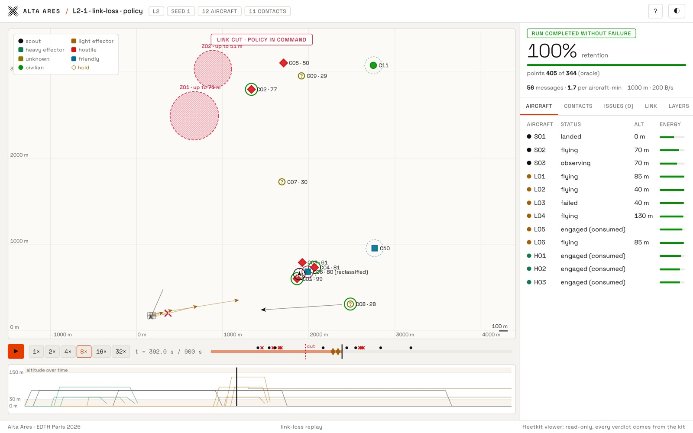
Cible reclassée, zone sur la route, ou fenêtre déjà ratée : l'appareil passe en return. Un scout termine d'abord les observations encore possibles avant la zone (il garde 8 s de marge).
15Le bouclier anticollision
Les actions sont testées dans l'ordre de préférence propre à l'intention. Pour chaque pair, on vérifie deux futurs : il fait ce qu'il a annoncé, ou il s'arrête. Si rien n'est sûr sur tout l'horizon, on prend l'action sûre sur les 2 prochaines secondes.
16Filet de sécurité et rapidité
step() est enveloppée dans un try/except qui renvoie hold. La bibliothèque standard suffit, et un appel dure 0,02 à 0,1 ms.
17Le résultat
| Cas | Événements | Ta policy | Msg/min | broadcast | Msg/min |
|---|---|---|---|---|---|
| L2-0 | reclassé, panne | 0,996 | 1,8 | 0,880 | 60 |
| L2-1 | panne, reclassé | 0,997 | 1,7 | échec | 60 |
| L3-0 | zone, panne | 0,987 | 6,4 | échec | 60 |
| L3-1 | panne, reclassé | 0,997 | 1,7 | échec | 60 |
| L4-0 | reclassé, panne | 0,997 | 1,7 | échec | 60 |
| L4-1 | panne, reclassé | 0,996 | 2,2 | 0,380 | 60 |
Score S_loss par cas (check_policy.py, 2 graines radio par cas, réglage du board 1000 m · 200 o/s). Rétention de 100 % partout, 0 run en échec. broadcast échoue sur 5 des 6 cas.
| Portée \ capacité | 50 o/s | 100 | 200 | 400 | 800 |
|---|---|---|---|---|---|
| 250 m | 1,00 ✓ | 1,00 ✓ | 1,00 ✓ | 1,00 ✓ | 1,00 ✓ |
| 500 m | 1,00 ✓ | 1,00 ✓ | 1,00 ✓ | 1,00 ✓ | 1,00 ✓ |
| 1000 m | 1,00 ✓ | 1,00 ✓ | 1,00 ✓ | 1,00 ✓ | 1,00 ✓ |
| 2000 m | 1,00 ✓ | 1,00 ✓ | 1,00 ✓ | 1,00 ✓ | 1,00 ✓ |
Grille de sizing sur L3-0, le cas le plus dur (zone surprise) : 20 cases sur 20, sizing score 1,00. La frontière est à 50 o/s pour toutes les portées, la plus basse possible.